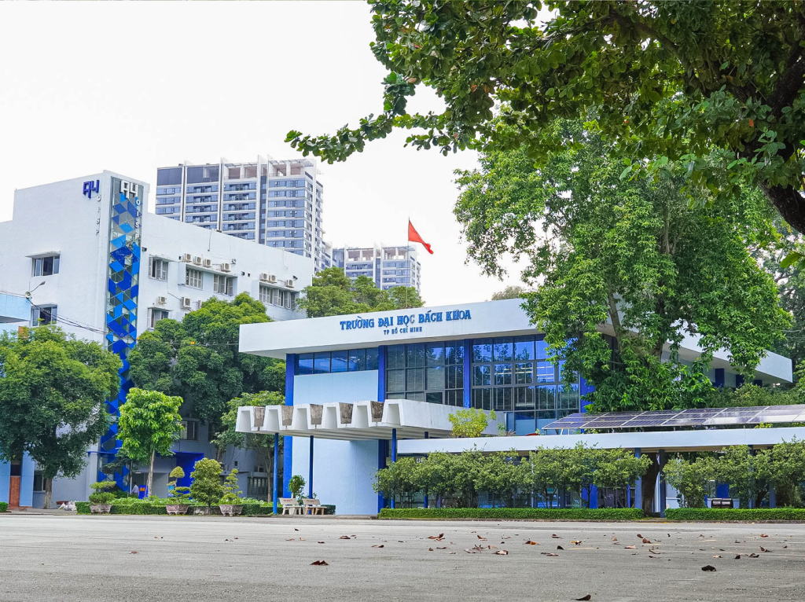
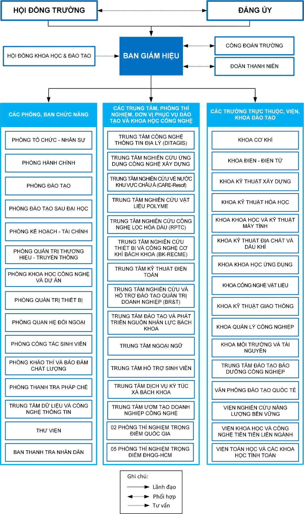
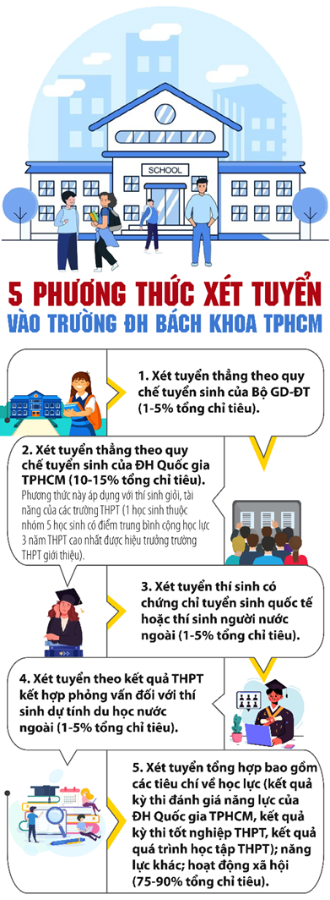

Giới thiệu trường Đại học Bách khoa - ĐHQG-HCM
Lịch sử hình thành
Trường Đại học Bách khoa - ĐHQG-HCM là một trường thành viên của hệ thống Đại học Quốc gia TP. Hồ Chí Minh. Tiền thân của Trường là Trung tâm Quốc gia Kỹ thuật được thành lập vào năm 1957. Hiện nay, Trường ĐH Bách Khoa là trung tâm đào tạo, nghiên cứu khoa học và chuyển giao công nghệ lớn nhất các tỉnh phía Nam và là trường đại học kỹ thuật quan trọng của cả nước.

Thư viện trường Đại học Bách khoa - ĐHQG-HCM
Các mốc thời gian quan trọng
Năm 1957: Trung tâm Quốc gia Kỹ thuật được thành lập theo Sắc lệnh 213-GD ngày 29/06/1957, gồm 4
trường kỹ
thuật, công nghệ và chuyên nghiệp: Trường Cao Đẳng Công Chánh, Trường Vô tuyến Điện, Trường Hàng Hải Thương
Thuyền và Trường Thương Mại.
1972: Trung tâm Quốc gia Kỹ thuật được đổi tên thành Học viện Quốc gia Kỹ thuật theo Sắc lệnh
135SL/GD ngày
15/9/1972 và Sắc lệnh số 53-SL/GD ngày 21/3/1973, gồm 6 trường thành viên.
1974: Học viện Quốc gia Kỹ thuật bị giải tán, trường được đổi tên Trường Đại học Kỹ thuật và là thành
viên
của Viện Đại học Bách khoa Thủ Đức.
1976: Trường được mang tên Trường Đại học Bách khoa theo Quyết định số 426/TTg ngày 27/10/1976.
1996: Trường được mang tên Trường Đại học Kỹ thuật trực thuộc Đại học Quốc gia TP. Hồ Chí Minh theo
Quyết
định số 1235/GD-ĐT ngày 30/3/1996.
2001: Trường được mang tên Trường Đại học Bách khoa theo Quyết định số 15/2001/QĐ-TTg của Thủ tướng
Chính
phủ về việc tổ chức lại Đại học Quốc gia thành phố Hồ Chí Minh.
Tầm nhìn - Sứ mạng
Tầm nhìn:Được công nhận toàn cầu là Trường Đại học hàng đầu trong khu vực về giảng dạy, học tập, nghiên cứu và khởi nghiệp – đổi mới sáng tạo.
Sứ mạng:
Đào tạo nguồn nhân lực chất lượng quốc tế; Sáng tạo tri thức mới thông qua nghiên cứu khoa học - chuyển giao công nghệ, khởi nghiệp - đổi mới sáng tạo; Thực hiện trách nhiệm xã hội và phục vụ cộng đồng.
Sơ đồ tổ chức

Hình thức kinh doanh
